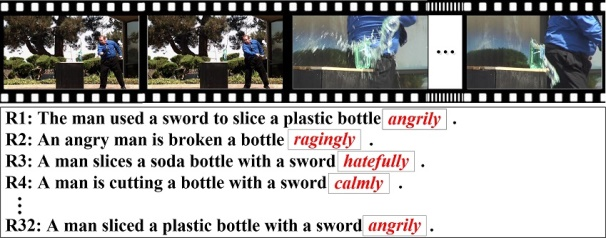
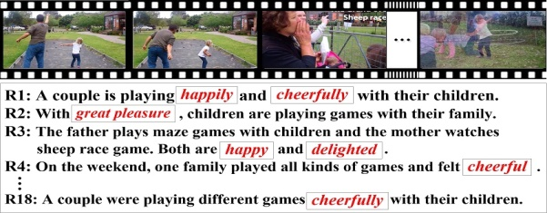
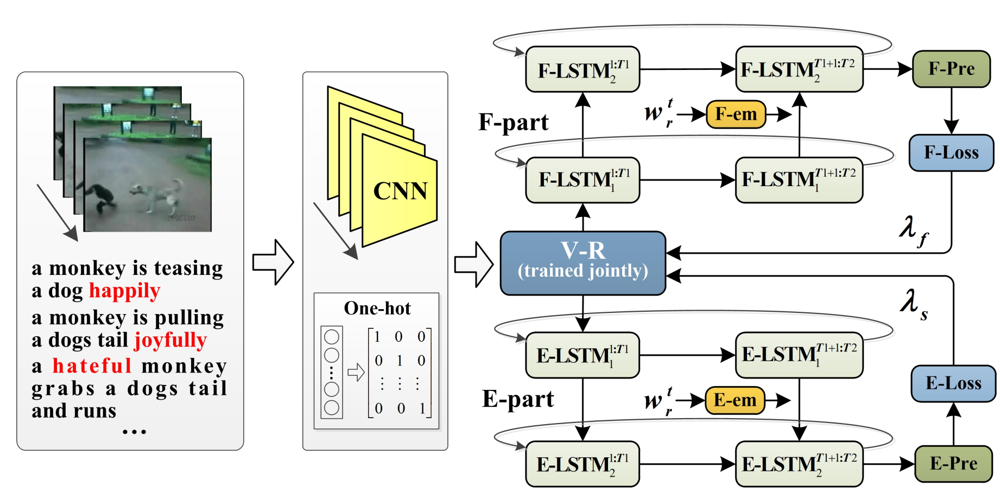
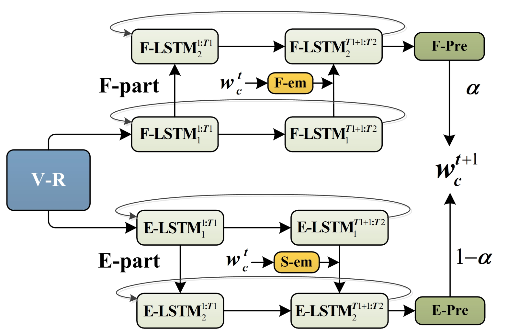
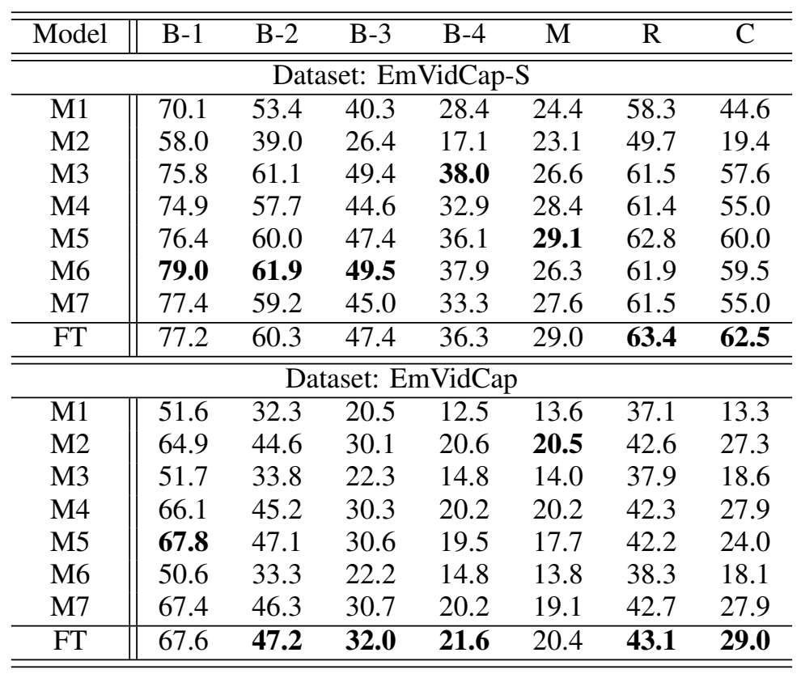
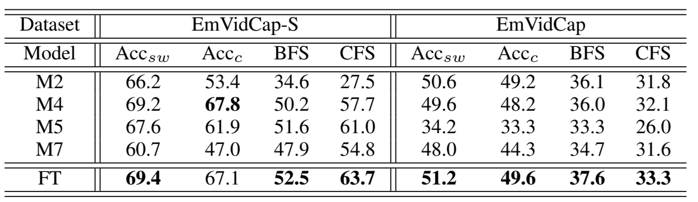
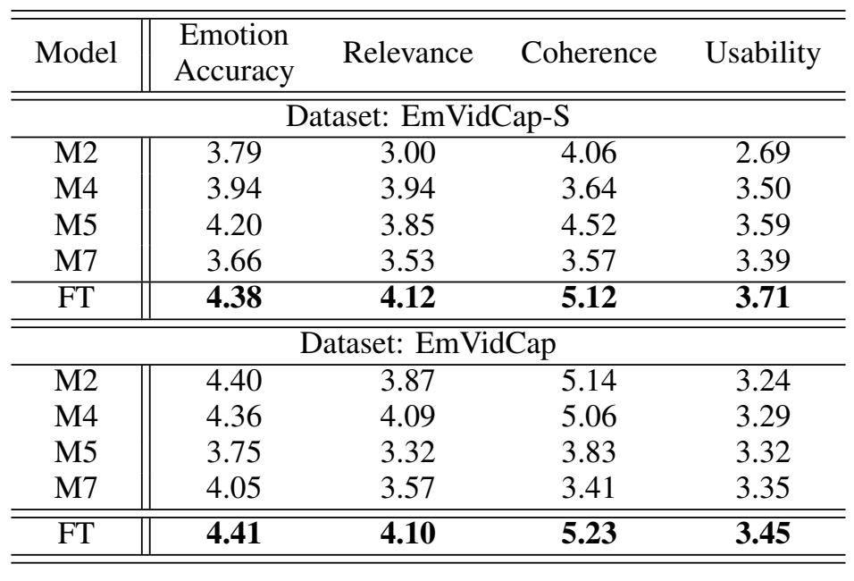
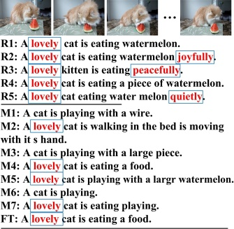
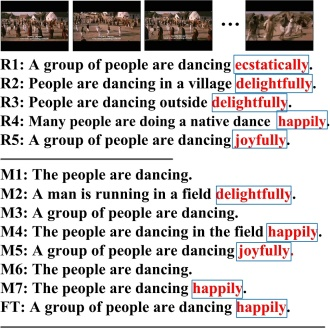
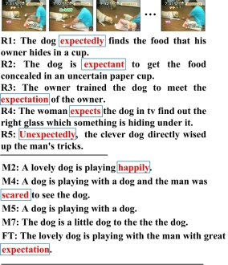

Emotion Expression with Fact Transfer for Video Description
Hanli Wang, Pengjie Tang, Qinyu Li and Meng Cheng
Overview:
Translating a video into natural language is a fundamental but challenging task in visual understanding, since there is a great gap between visual content and linguistic sentence. More attention has been paid to this research field and a number of state-of-the-art results are achieved in recent years. However, the emotions in videos are usually overlooked, leading to the generated description sentences being boring and colorless. In this work, we construct a new dataset for video description with emotion expression, which consists of two parts: a re-annotated subset of the MSVD dataset with emotion embedded and another subset annotated with long sentences and rich emotions based on a video emotion recognition dataset. A fact transfer based framework is designed, which incorporates a fact stream and an emotion stream to generate sentences with emotion expression for video description. In addition, we propose a novel approach for sentence evaluation by balancing facts and emotions. A group of experiments are conducted, and the experimental results demonstrate the effectiveness of the proposed methods, including the idea of dataset construction for video description with emotion expression, model training and testing, and the emotion evaluation metric.
Method:
In this work, a novel dataset including two subsets is constructed for video description with emotion expression. On one hand, a subset of MSVD including the videos and the related reference sentences is used to construct a small-scale dataset called EmVidCap-S. To build EmVidCap-S, a set of emotion words is designed based on the Plutchik's Wheel of Emotions, with 34 emotions and 169 emotion words used. These emotion words are embedded into the original reference sentences to generate the re-written references by human annotators according to the video content. On the other hand, the dataset for video emotion prediction which possesses 8 emotions is employed to build a new video-sentence dataset called EmVidCap-L, where emotion expression is fully considered when writing the reference sentences. The datasets of EmVidCap-S and EmVidCap-L are combined to form a larger and more abundant dataset named EmVidCap for video captioning with emotions.
 
(a) Video-sentence example of EmVidCap-S (b) Video-sentence example of EmVidCap-L
Fig. 1 Examples from the EmVidCap dataset
A fact transfer based method for video captioning with emotions is proposed, where both of the factual and emotional information in a video are explored. The framework of S2VT is used as the basis to build the proposed fact and emotion modules. Following the practice in most related works, a two-stage optimization strategy is employed for model training. In other words, two modules are included in the proposed model: one is the fact part to capture factual information and the other is the emotion part to obtain emotional information. These two modules have the same architecture and are optimized by joint modeling. At the first stage of model training, the dataset with only the factual description is employed to train the fact part, making the model to learn the expression of facts. At the second stage, both the fact part and the emotion part are enabled and optimized on the dataset containing emotion expression, with the fact part fine-tuned and the emotion part fully trained. The output gradients from these two parts will not only be back propagated to their own branch but also to the other's branch with a shared embedding layer. At the testing time, the output probabilities from these two parts are fused by weighted average, achieving the expression of both facts and emotions.
 
(a) Proposed FT for training at the second stage (b) Testing pipeline FT
Fig2. Training and testing of FT
In addition, an approach balancing facts and emotions is devised to address the evaluation issue on emotion sentences (The details of the proposed evaluation metrics can be seen in our paper).
Results:
In addition to the proposed FT model, another 7 models are applied for ablation study. The details of these competing models are presented as follows.
Model M1: Only the fact part is enabled in the proposed fact transfer based model and trained on the FactVideo2 dataset. This model is used as the baseline model for fact captioning.
Model M2: Only the emotion part is enabled and trained on the emotion captioning dataset (EmVidCap-S or EmVidCap) directly, which can be viewed as the baseline model for captioning with emotions.
Model M3: Only the fact part is activated in the proposed model and trained on the FactVideo1 dataset. Then, the model is further fine-tuned on the FactVideo2 dataset. The purpose of M3 is to evaluate the effect of fact transfer by fine-tuning.
Model M4: Similar to M3, the fact part is used and trained on FactVideo1 by M4. Then, the model is fine-tuned on the emotion captioning dataset (EmVidCap-S or EmVidCap) to learn the emotional information.
Model M5: Both the fact and emotion parts are enabled. The fact part is first trained on FactVideo1 and then fine-tuned on FactVideo2. Then, both the two parts are optimized on the emotion captioning dataset with the fact part further fine-tuned and the emotion part fully trained. Finally, the output probabilities from these two parts are fused with weighted average. This model is similar to the proposed FT model, except that the fact part is also fine-tuned on FactVideo2 before optimized on the emotion captioning dataset.
Model M6:The fact part and the emotion part are integrated and trained on FactVideo1, then the integrated model is further fine-tuned on FactVideo2. Finally, the weighted average method is employed to fuse the output probabilities of these two parts. This model is applied to assess the effectiveness of the fusion method.
Model M7: Like M6, the integrated model of fact and emotion parts is first optimized on FactVideo1. Afterwards, the model is fine-tuned on the emotion captioning dataset, and equal weights are applied to fuse the output probabilities of these two parts. The usage of this model is to further reveal that emotion depends on fact and more emotion feedback may harm the overall semantics of the generated sentence.
Table 1 Performance of the competing models with BLEU, METEOR, ROUGE-L and CIDEr

Table 2 Accuracy comparison of the generated emotion words and sentences

Table 3 Human evaluation of the competing models

The comparative results with traditional evaluation metrics on both the EmVidCap-S and EmVidCap datasets are shown in Table 1. After evaluation with traditional metrics, the accuracies of the generated emotion words and sentences are assessed. Because M1, M3 and M6 have no ability to generate sentences with emotions, they don’t participate in the comparison here. The results are presented in Table 2. Also, the results of human evaluation in terms of emotion accuracy, relevance, coherence and usability are shown in Table 3.
A few examples including the references and the generated sentences obtained by the competing models are presented in the following Fig. 3.
  
Fig. 3 Examples of the captions obtained by the competing models (the emotion words are marked in red and framed). (a) and (b): EmVidCap-S examples with the models trained on EmVidCap-S. (c) and (d): EmVidCap-L examples with the models trained on EmVidCap.
Source Code:
Original illustration: image placeholderEmVidCap1.0.zip
Dataset:
To foster the research on video captioning/description with emotion expression, we propose a new EmVidCap dataset. If you are interested in this work and want to download the dataset, please read and sign [Original illustration: image placeholderDatasetAccessAgreement.pdf], and send the scanned version of the signed agreement to hanliwang@tongji.edu.cn or 5tangpengjie@tongji.edu.cn. We will offer the link and password to use the dataset.
Citation:
Please cite the following paper if you use the code and the dataset:
Hanli Wang, Pengjie Tang, Qinyu Li and Meng Cheng, Emotion Expression with Fact Transfer for Video Description, IEEE Transactions on Multimedia, vol. 24, pp. 715-727, Feb. 2022. DOI: 10.1109/TMM.2021.3058555.